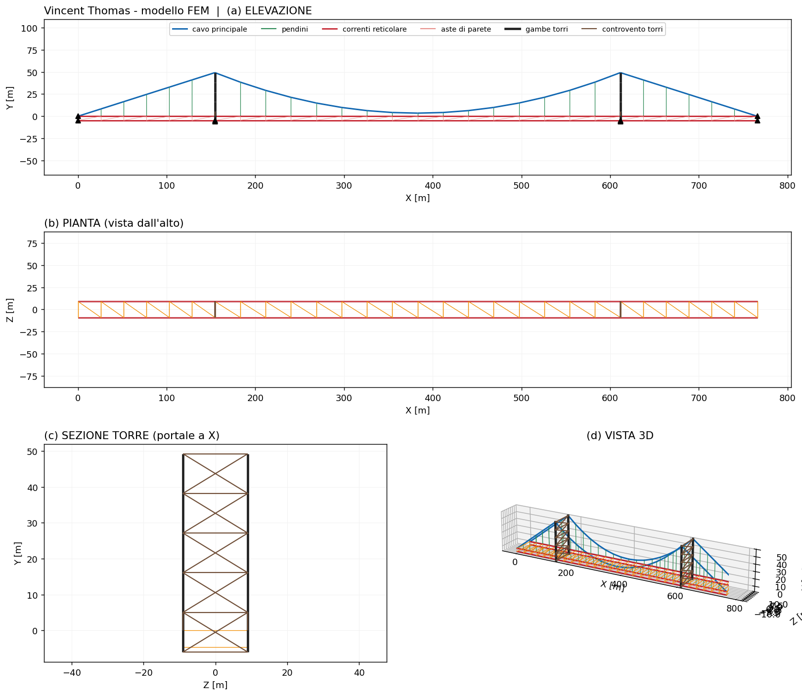
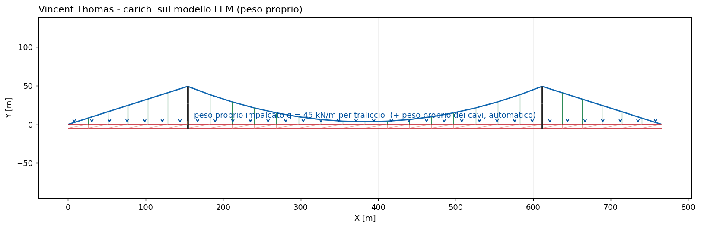
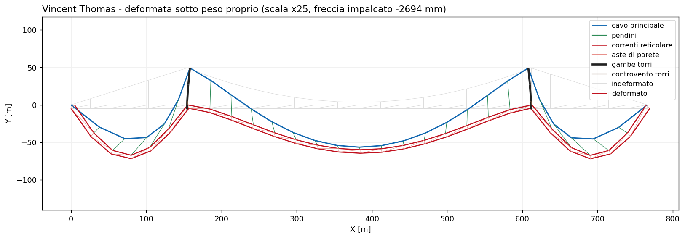
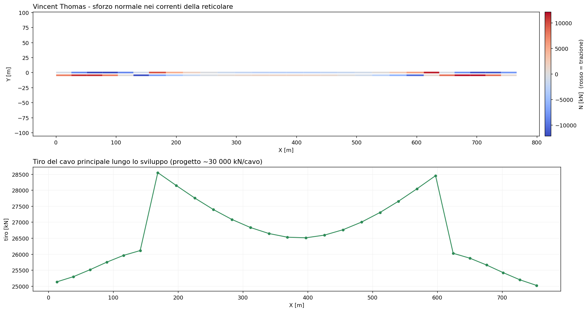
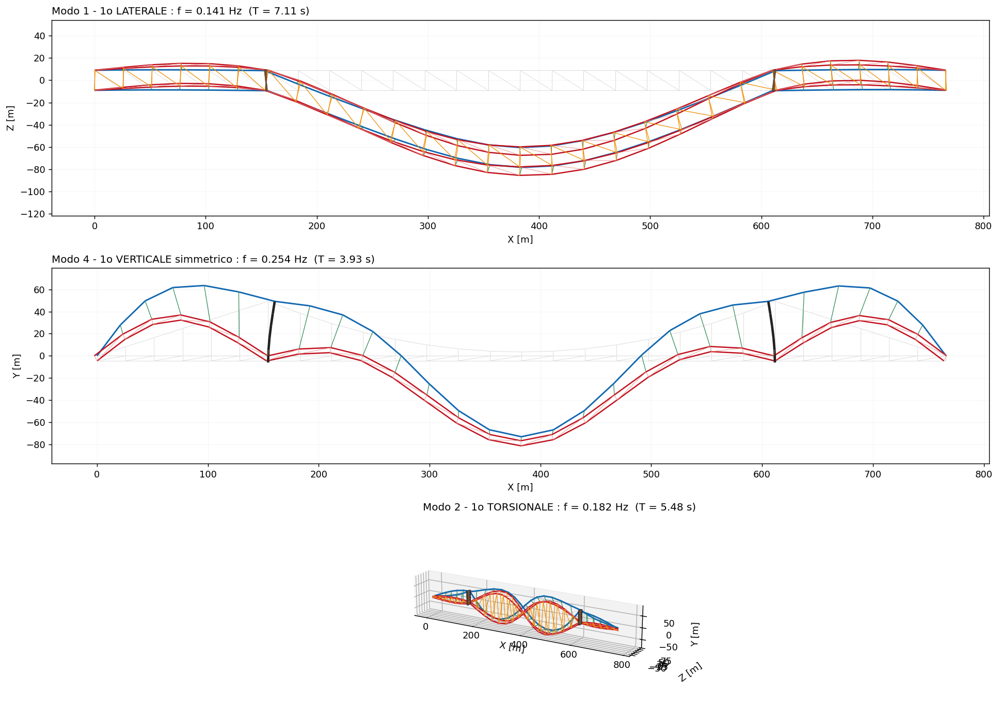

35 - Ponte sospeso Vincent Thomas (San Pedro)
Ricostruzione 3D fedele e analisi sotto peso proprio del Vincent Thomas Bridge (San Pedro, CA), benchmark sismico molto studiato. Geometria, sezioni e carichi sono i valori reali pubblicati da Abdel-Ghaffar & Housner nei report dell'Earthquake Engineering Research Laboratory del Caltech; le frequenze calcolate sono confrontate con quelle misurate sullo stesso ponte.
Il modello usa gli elementi cavo: cavo principale a catenaria elastica, pendini a sola trazione e soluzione non lineare con load-stepping.
1. Dati reali
Dall'esempio numerico del Vincent Thomas in A.M. Abdel-Ghaffar, Dynamic analyses of suspension bridge structures, EERL 76-01, Caltech 1976 (pp. 199-200):
| Grandezza | Valore reale |
|---|---|
| Campata principale | 1500 ft = 457.2 m |
| Campate laterali | 506.5 ft = 154.4 m |
| Freccia del cavo | 150 ft = 45.72 m |
| Interasse travi/cavi b | 59.17 ft = 18.03 m |
| Altezza travi reticolari d | 15 ft = 4.572 m |
| Area di un cavo | 121 in² = 0.0781 m² |
| Area di un corrente | 53.78 in² = 0.0347 m² |
| Area di una diagonale | 16.9 in² = 0.0109 m² |
| Peso proprio impalcato | 6.15 kips/ft (≈ 45 kN/m per traliccio) |
| Tiro orizzontale del cavo (progetto) | 6 750 kips = 30 027 kN/cavo |
2. Modello FEM
L'impalcato è formato dalle due travi di irrigidimento reticolari reali (correnti, montanti e diagonali tipo Pratt) collegate da traversi e controvento inferiore, a formare il sistema a cassone torsionalmente rigido. Il cavo principale è modellato con elementi a catenaria elastica (uno per pannello, peso proprio esatto), i pendini sono cavi a sola trazione e le torri sono a portale (due gambe collegate da controvento a X su più livelli).

3. Carichi
Carico = peso proprio dell'impalcato (distribuito sui correnti superiori) + peso proprio dei cavi (aggiunto automaticamente).

4. Analisi statica
Soluzione non lineare (Newton-Raphson con load-stepping). Il cavo assume la sua forma di equilibrio sotto peso proprio e l'impalcato lo segue tramite i pendini.

Lo sforzo normale nei correnti alterna trazione/compressione lungo lo sviluppo; il tiro del cavo cresce dalla mezzeria verso le torri.

Validazione statica: il tiro orizzontale calcolato è 28 585 kN/cavo, contro il valore di progetto pubblicato di 30 027 kN/cavo (scarto −5 %), senza carichi mobili — un ottimo accordo con i soli dati reali.
5. Analisi modale
Con la massa propria dei cavi inclusa e i cavi linearizzati attorno all'equilibrio, l'analisi modale 3D fornisce modi verticali, laterali e torsionali. Le frequenze verticali misurate da Abdel-Ghaffar & Housner (prove di vibrazione ambientale, EERL 77-01, Fig. 18) valgono 0.234 / 0.385 / 0.835 Hz (modi simmetrici).
| Modo | beamfeapy 3D | misurato (1977) | scarto |
|---|---|---|---|
| 1° laterale | 0.141 Hz | — | — |
| 1° torsionale | 0.182 Hz | — | — |
| 1° verticale simmetrico | 0.254 Hz | 0.234 Hz | +9 % |
| 2° verticale | 0.395 Hz | 0.385 Hz | +3 % |
Usando le sezioni reali del report (nessuna calibrazione), il 1° modo verticale è entro il +9 % del misurato e il 2° entro il +3 %: la ricostruzione è fedele in geometria, rigidezza e massa.

6. Riferimenti
- A.M. Abdel-Ghaffar, Dynamic analyses of suspension bridge structures, EERL 76-01, Caltech, 1976 (dati strutturali, esempio Vincent Thomas).
- A.M. Abdel-Ghaffar, G.W. Housner, An analysis of the dynamic characteristics of a suspension bridge by ambient vibration measurements, EERL 77-01, Caltech, 1977 (frequenze misurate).
- H.M. Irvine, Cable Structures, MIT Press, 1981.
7. Come rigenerare
python scripts/vincent_thomas_real.py # costruzione modello + analisi
python scripts/gen_vincent_thomas_figures.py # tutte le figure di questa pagina
Vedi anche il ponte strallato Bill Emerson, il Ponte sullo Stretto di Messina (modello globale 3.300 m) e la teoria degli elementi cavo.